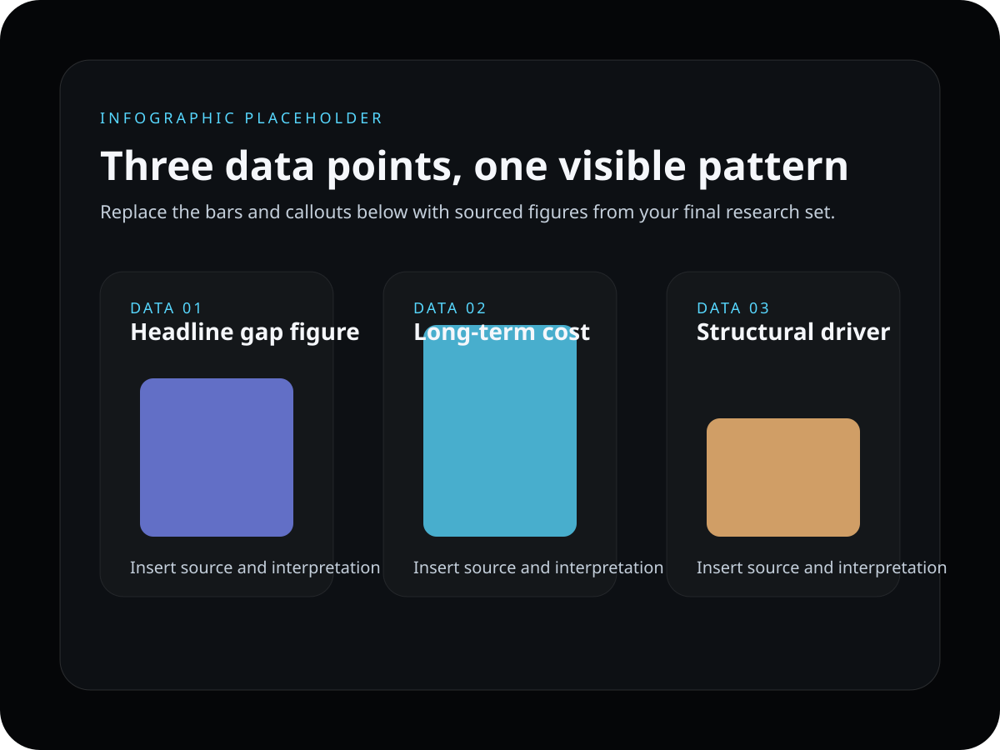

The national picture
79c
Across Australia, women earn 79 cents in total remuneration for every dollar men earn on average.
WGEA reports a 21.1% gap, or $28,356 less per year for full-time employees. Source
Learn
These figures show the size of the gap, how it compounds over time, and the workplace structures that keep feeding it.
The national picture
79c
Across Australia, women earn 79 cents in total remuneration for every dollar men earn on average.
WGEA reports a 21.1% gap, or $28,356 less per year for full-time employees. Source
What time does to the gap
$52,000
The gap peaks between ages 55 and 59, when women earn $52,000 less each year than men in the same age group.
WGEA identifies age 34 as a critical point where the gap accelerates. Source
Where the gap deepens
29.7%
Half of employers report a discretionary-pay gap larger than 29.7%, showing how bonuses, overtime, and informal rewards deepen inequality.
This pattern appears even outside senior leadership. Source
Why this keeps happening
WGEA identifies occupational segregation, care-related interruptions, low flexibility in senior roles, bias in advancement, and discretionary pay as major drivers.

Visual summary
The infographic condenses the core figures into one visual frame that can be shared quickly, printed clearly, and remembered easily.
What the numbers point to
Once the pattern is clear, the next question is practical: who can act, and what should they change first?
See the action routes